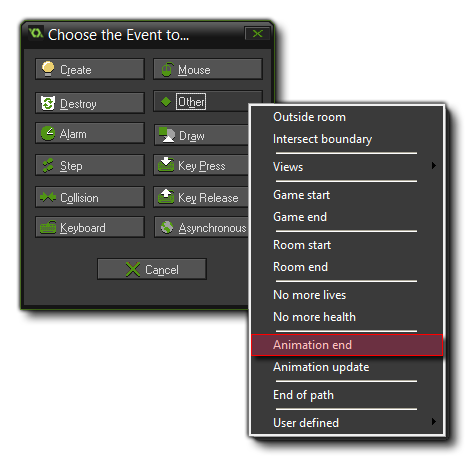

Tutorial
Page 8 of 9
Enemies
Let's now make the first enemy in our game. It will be a simple enemy, that flies down the screen without shooting, but if it collides with the player plane the game will end. For this we need another sprite,
so create one now, call it "spr_Enemy1" and load the image "enemy1_strip3.png". like the player plane, set its origin to the centre.
Now create a new object ("obj_Enemy1"), give it a Create Event and set the vertical speed to 4 to make the plane fly downwards faster than the background is scrolling. When the plane reaches
the bottom of the room we will need to make it reappear at a random place at the top of the room. You should know how to do this, so add a Step Event now with the appropriate actions... and if you are
unsure, go back a few steps and look how we made the Islands move.
We will need to define two Collision Events for the enemy plane too:
- the collision event with the bullet, which should destroy the enemy plane
- the collision event with the player controlled plane which should destroy both planes and end the game
but, before we go ahead with these collisions, we should prepare the explosion effect.
Explosions
For the explosion effect, we will need a sound effect, a sprite and another object. Click with the right mouse button on the "Sounds" folder in the resource tree and select "Add Sound". Browse
to the "Scrolling Shooter Assets" folder and select the file "snd_explosion1.wav" and save it as snd_Explosion1, then create a new sprite (call it spr_Explosion1) and load in the sprite
"explosion1_strip6.png", setting the origin to the centre before saving.
We will need another new object, so create it now and call it "obj_Explosion1", and assign it the sprite you just created, as well as a Create Event. In this event, drag a Play Sound
action from the Main1 tab, and make it play our new explosion sound without looping. Finally, we are going to add a new event to this object... the Animation End event.

When you are dealing with sprites that are animated, this event will be triggered every time the animation reaches the last image index (the last sub-image of the sprite). So, for example, our explosion sprite
has 6 sub-images numbered from 0 to 5. When GameMaker: Studio draws the sprite, it will draw one frame of the animation every step (by default, although this can be changed) so, after 5 steps it reaches
the image index 5, and triggers the Animation End event once. This is the perfect place to destroy the instance of the object since we only want to show the explosion once, so go ahead and add an
Animation End event now with a Destroy instance action (from the Main1 tab).
Save our explosion object now, and open up the enemy plane object again.
Collision With Bullets
We can now go ahead and add our Collision Events. The first should be with the object obj_Player_Bullet, so add that now.
In this event, create an instance of the explosion object at (0,0) relative to the enemy plane we have just made, and also add a Jump To Position action, as we want to move the plane outside of the
room and to a random position along the x axis (as we did for the islands). Now, we could add a collision event into the bullet object too to destroy it, but since we already have a collision between the enemy and
the bullet we might as well use it!
Drag a Destroy Instance action into the event, but this time change the section at the top of the action (where it says "Applies to") from Self to Other. In GameMaker,
the word Other is a special keyword which is used in the collision event to indicate that the action must happen to the "other" instance in the collision. In this case the "other" instance is the
bullet object, so we are moving the enemy plane and destroying the bullet in the same event.
The event should look like this:
Collision With The Player
Next we need to handle the collision with the player plane. Again we will need an explosion sprite (a bit bigger this time) and an exploding sound (a bit louder this time). Create a new sound, call it
snd_Explosion2. Load the second explosion WAV file from the "Scrolling Shooter Assets" folder and save it. Now, add a new sprite, call it spr_Explosion2 and load the sprite strip for the larger
explosion from the assets folder and save.
Make another new object and call it obj_Explosion2, assign it the sprite you just added and a Create Event in which we play the sound effect you just added too. We also need to add an
Animation End event, as we did for the other explosion, only this time we are going to make it do something slightly different...
In this case, since this explosion only happens when the player plane is destroyed, we are going to show a message asking the player to try again, and then restart the game. There are actions for both these
things which can be found on Main2 tab, so add them no into the Animation End event of the explosion, and have the message say something like "You died! Press Okay to try again". It should
look like this now:
You can close this object now, and open the obj_Enemy1 again. Add a Collision Event with the player plane instance with an action to create an instance of obj_Explosion1 at (0, 0)
relative to the enemy plane, then add a Change Instance action from the Main1 tab, in the Objects section. In this case we want it to affect the "other" instance (ie: the player plane)
so change the "Applies to" part to other, then have it "change into" the new explosion object, obj_Explosion2 and make sure that the section "Perform Events" is set to "yes". Basically, when
changing instances in this way, you can have them perform their Create and Destroy events or not. In this case we want them to be performed since our explosion object plays a sound when the instance is
created.
The final thing to do here is to add a Jump To Position action to move the enemy plane back out the room ready to fight again.

© Copyright YoYo Games Ltd. 2015 All Rights Reserved